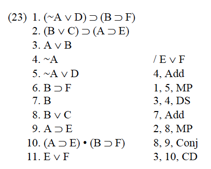
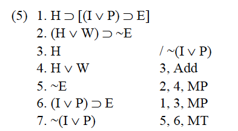
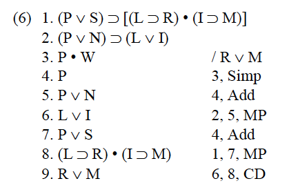
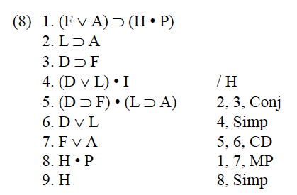

- Sect IV:
- 5
- 1.C ∨ (H→R)
- 2.S ∨ (R→E)
- 3. ∼ C
- 4. ∼ S
- Therefore
- H → E
- 5.H → R(1,3,DS)
- 6.R → E(2,4,DS)
- 7.H → E(5,6HS)
- 6
- 1. ∼ D ∨ (L→∼F)
- 2. ∼ D → ∼ F
- 3. ∼ ∼ F
- Therefore
- ∼ L
- 4. ∼ ∼ D(2,3,MT)
- 5.L → ∼ (1,4,DS)
- 6. ∼ L(2,5MT)
- 8
- 1.R ∨ B
- 2.(I∨H) ∨ ∼ R
- 3.L → (I→T)
- 4.T → H
- 5.L
- Therefore
- B
- 6.I → T(3,5,MP)
- 7.I → H(4,6,HS)
- 8. ∼ R(2,7,MP)
- 9.B(1,8,DS)
- 9
- 1.(D→C) → (N∨W)
- 2.(D→S)
- 3.(S→C)
- 4. ∼ N
- therefore
- W
- 5.D → (2,3,HS)
- 6.N ∨ W(1,5,MP)
- 7.W(4,6,DS)
- 5
- Sect III:
- 23

- 24
- 23
- Sect IV
- 5

- 6

- 8

- 5